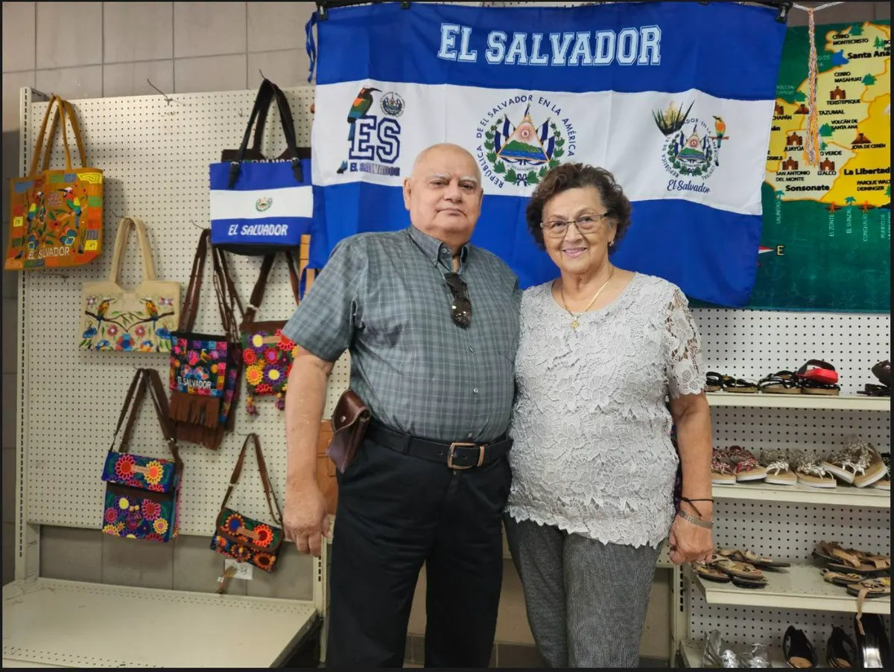
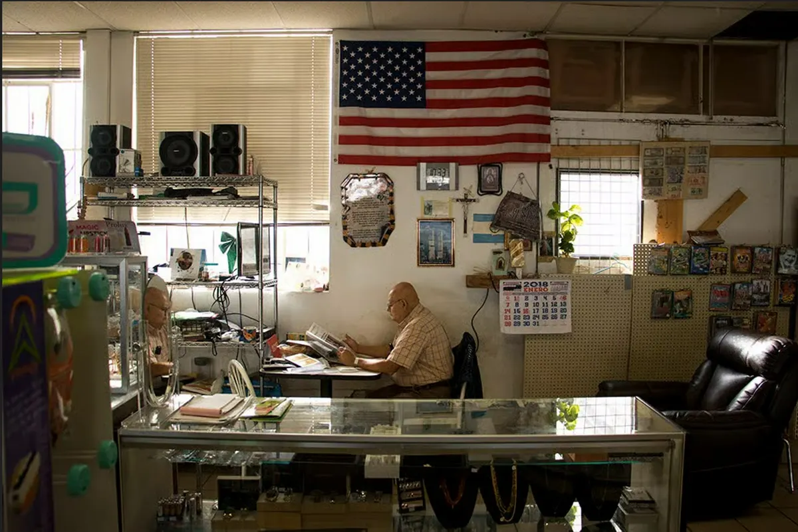
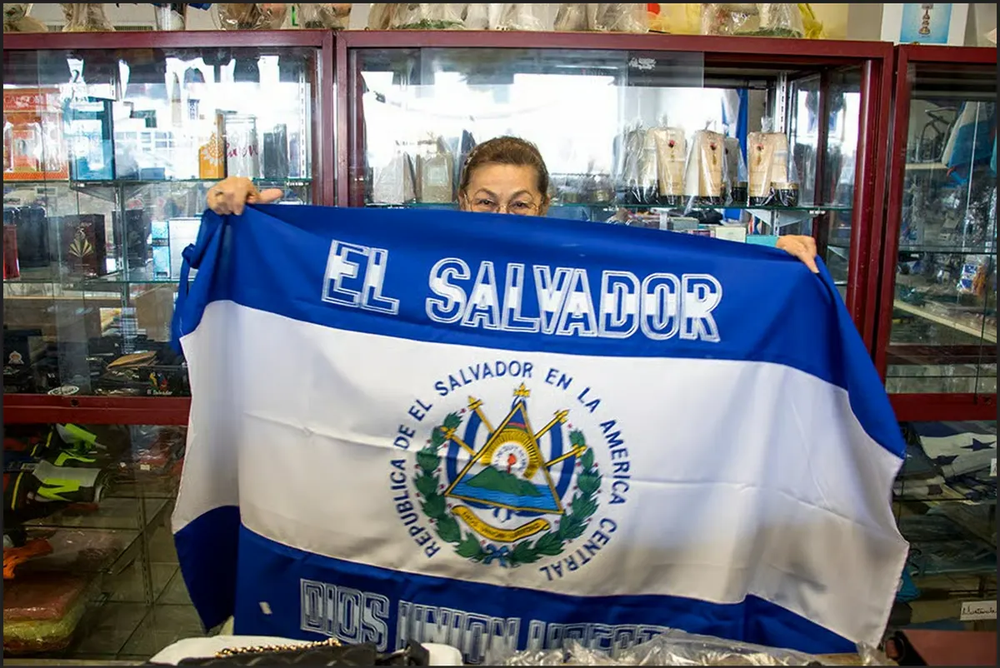

5128 E Colfax Ave · Denver · desde 1991
Un pedacito de El Salvador en East Colfax.
Queso duro, Kolashampan, pan dulce, guayaberas, el Silabario de la escuela y todo lo que extraña de casa. Hace más de 30 años que lo traemos de El Salvador y Centroamérica, y lo acomodamos a mano en cada estante.

Capítulo uno
Empezó en un local del tamaño de un clóset en Colorado Boulevard.
Delia era maestra en El Salvador; Jorge venía de la industria aérea en Ecuador. En Denver soñaron con un lugar donde los centroamericanos se sintieran en casa. La tiendita creció, se mudó a East Colfax y se convirtió en la tienda salvadoreña más antigua de Colorado.
Más de tres décadas después, siguen detrás del mostrador: recomendando quesos, guardando el pan dulce de los clientes de siempre y apoyando a la comunidad cuando más lo necesita.
Conoce nuestra historia

"La gente viene de todo Colorado, Wyoming y Nebraska a comprar quesos y recuerdos que él importa de su tierra."
- 1991 Primer negocio salvadoreño en Denver (1991)
- 30+ años en la comunidad hispana de Denver
- 2 dueños que todavía le atienden en persona
Lo que encontrarás
Lo que hay en los estantes
(…y lo que no cabe, está en la bodega. ¡Pregunte!)
-
 KolashampanBebidas
KolashampanBebidas
-
 Básicos de despensaPasillo 1
Básicos de despensaPasillo 1
-
 Queso Duro ViejoEl favorito
Queso Duro ViejoEl favorito
-
 GuayaberasRopa y calzado
GuayaberasRopa y calzado
-
 Pan DulceLlegue temprano
Pan DulceLlegue temprano
- También hay: chanclas · banderas · carteras · dulces típicos · nances · tamales de elote · remedios · recuerdos Ver todos los artículos
-
 Gaseosas en botella de vidrioBebidas
Gaseosas en botella de vidrioBebidas
-
 Silabario HispanoamericanoNostalgia y hogar
Silabario HispanoamericanoNostalgia y hogar
-
 Remedios naturalesBienestar y De Venta Libre
Remedios naturalesBienestar y De Venta Libre
-
 Especias y hierbasLa pared de las bolsitas
Especias y hierbasLa pared de las bolsitas
-
 Gorras de paísLa vitrina
Gorras de paísLa vitrina
Aviso para los de siempre
¡Ojo, vecino! Colfax anda en obra.
Esos conos anaranjados frente a la tienda no son decoración nueva. Estacione detrás de la tienda y dé la vuelta hasta la entrada, o busque lugar en la calle. Las obras van despacio; nosotros seguimos abiertos.
Y sí, la vuelta vale la pena por el queso duro.
Cómo llegarVisítanos
Venga a vernos.
Horario
| Domingo | 10–6 |
|---|---|
| Lunes | 10–7 |
| Martes | 10–7 |
| Miércoles | 10–7 |
| Jueves | 10–7 |
| Viernes | 10–7 |
| Sábado | 10–7 |
Abrimos 10 AM · todos los días
TIENDA SALVADOREÑA
5128 E COLFAX AVEDENVER, CO 80220
- Teléfono
- (303) 394-4185
- Correo electrónico:
- info@
tiendasalvadorenadenver.com - Pago
- Efectivo · Crédito · Débito
- Parqueo
- Atrás de la tienda o en la calle
¡Gracias por su visita! Vuelva pronto.